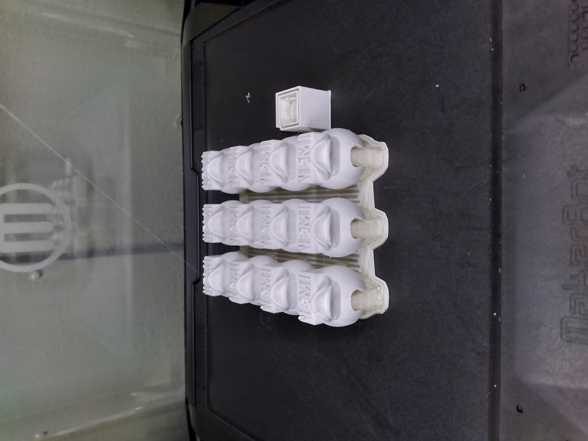
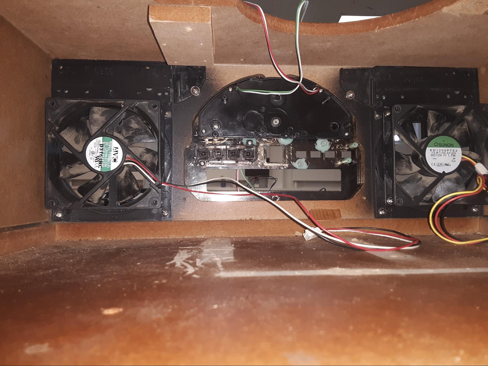
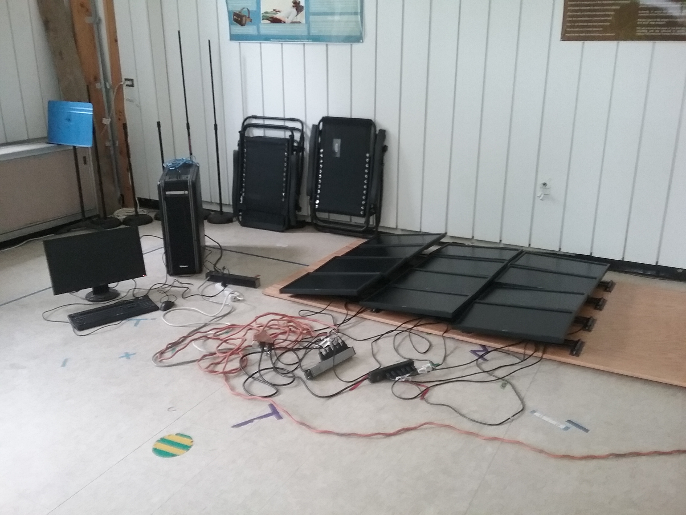
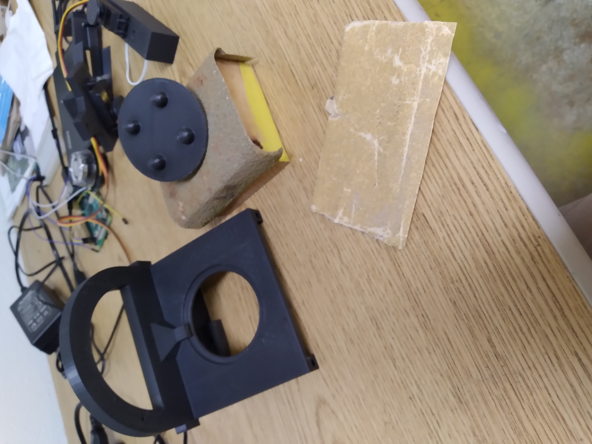
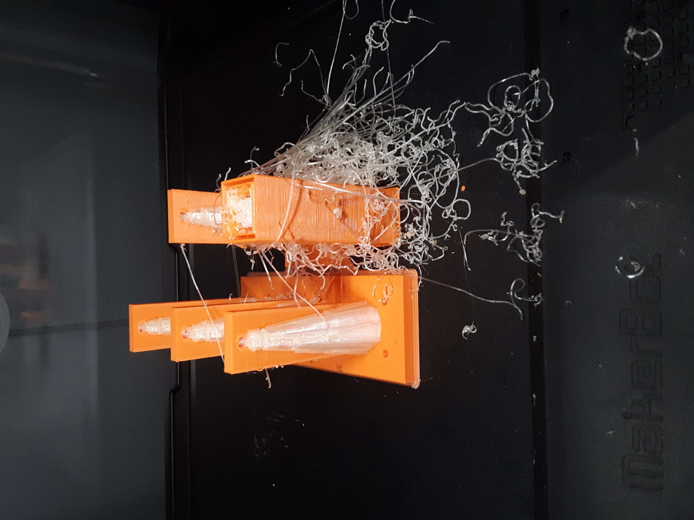
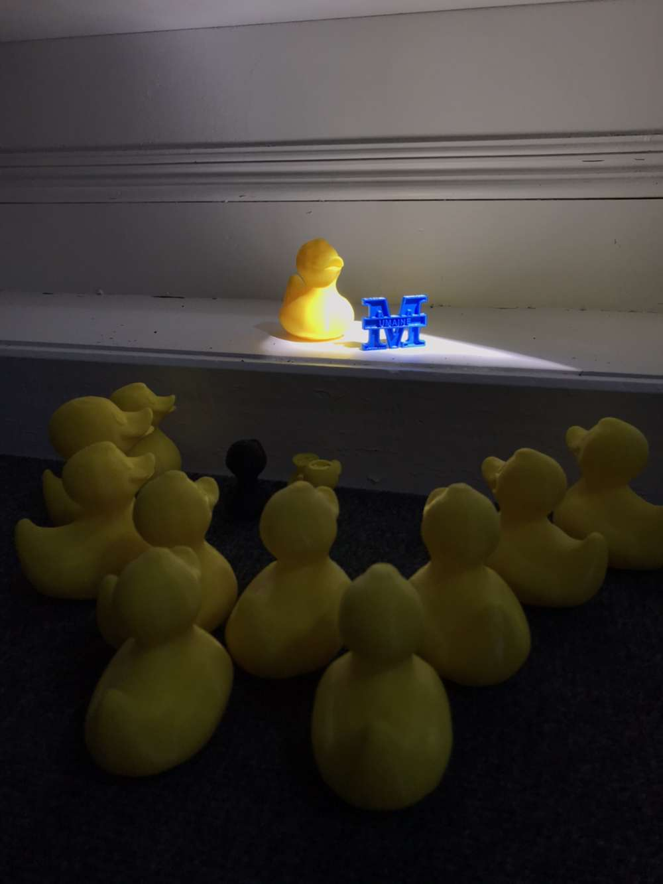

Custom duck heads used for the graduation cords immerging from their heated chamber.

A data collection apparatus and its control box without the associated central platform or shroud.

The view from inside a record player early in its journey to becoming a computer case.

Preliminary Testing of the monitors that were eventually part of the Monitor Wall project.

A completed 3D print used to mount a camera arm. A hammer would be required to join that arm with this mount.

A sanding and lubricating operation that would prove fruitless, but full of lessons.

A completed 3D print of legs used for a data collection prototype.

Many ducks attending the speech of one very important duck.